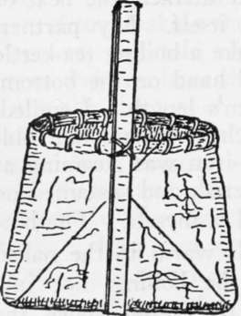
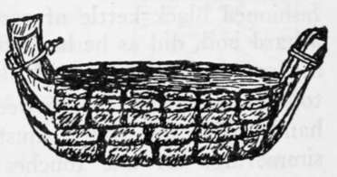
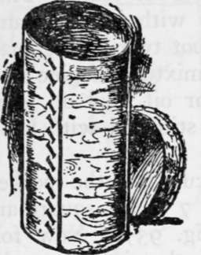
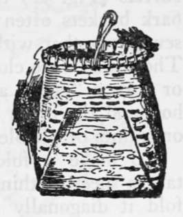
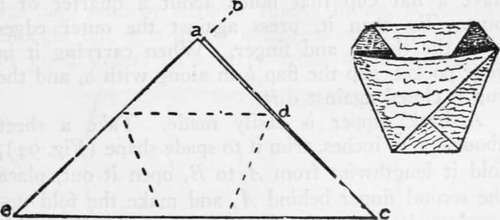
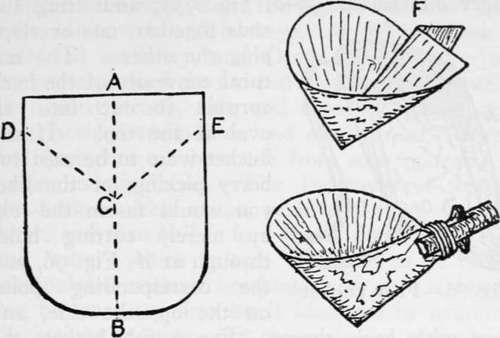

Bark Utensils
Description
This section is from the book "Camping And Woodcraft", by Horace Kephart. Also available from Amazon: Camping and Woodcraft.
Bark Utensils
Vessels to hold water or other liquids can be made, as above, of any size, square or rectangular. You soon will learn the trick of folding the corners without preliminary folding and creasing. Since the top of a cubical bark vessel of this sort readily adapts itself to a circular shape, when softened by heating, one can make a water bucket, for example, by sewing a hoop or splint (like a basket splint) around the inside of the top edge, and adding another vertically for bail, like a basket handle, going clear around the bottom to take up the strain (Fig. 89). Punch the holes with a sharp ened twig for awl, and use rootlets or bast fiber, soaked in water, for thread, or lace the loop in place with narrow strips of pliable bark.
Fig. 89. Bark water bucket.
Fig. 90. Bark trough or basin.
Fig. 91. Bark barrel.
Fig. 92. Bark berry pail.
Fig. 93. Pocket cup (folding).
Wash basins and the like are made in the same way, shallow without bails. A trough or tub, of any size, to hold liquids, is quickly made by rossing off the thick outer bark from the ends of a sheet of elm, basswood, poplar, cottonwood, or other suitable material, but leaving it on the middle part to stiffen the vessel; the rossed ends are then folded over in several overlaying laps, gathered in somewhat the shape of a canoe's bow and stern, and tied with bark straps (Fig. 90). The Indians used to make such tioughs for collecting maple sap. They also made elm barrels (Fig. 91) that would last for years. Their bark buckets often were made with lapped seams, sewed together with bark or root twine (Fig. 92). The seams were closed with a mixture of pine resin or spruce "gum" and grease or oil, laid on while hot, and the upper edges were stiffened with hoops or splints of pliable wood.
To make a folding bark cup for the pocket: take a sheet of thin bark about 7 inches square and fold it diagonally (a to b, Fig. 93). Now fold the corner c over to the left so that its upper edge coincides with the dotted line that extends horizontally from d. Then fold, over this, the corner e straight to d. This leaves two triangular flaps standing out at the top, a and b. Slip the inner one, a into the outer pocket formed by e, and fold the flap b backward over the outside. You now have a flat cup that holds about a quarter of a pint. To open it, press against the outer edges with the thumb and finger. When carrying it in your pocket, slip the flap b in along with a, and the cup is closed against dirt.
A bark dipper is easily made. Take a sheet about 8 x 10 inches, trim it to spade shape (Fig. 94), fold it lengthwise from A to B, open it out, place the second finger behind A, and make the fold upward as shown at F. Cut a stick for handle, with stub of a fork at one end to hang it up by. Split the other end of the stick, insert F in the cleft, and bind it fast with a narrow strap of bark.
A strong and durable tray, dish pan, or similar utensil, is made like Fig 90, with the addition of a hickory or other rim like that of Fig. 92, sewed on the outside. Leave the thick bark on the sides to stiffen them, but shave it off of the bottom, so that the vessel will stand upright.
Fig. 94. Bark dipper.
Continue to: